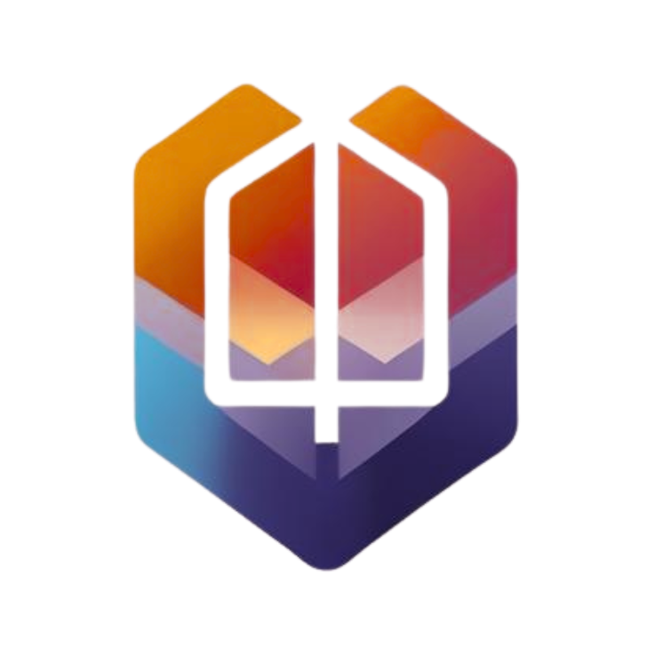

MixPro AI Color Stationอัปโหลดรูป/ถ่ายรูป ➜ เลือกพื้นที่สีอ้างอิง ➜ (ตัวเลือก) คลิกเทียบจุดเทาเพื่อ White Balance ➜ ระบบจะคำนวณค่า CIELAB และแนะนำสัดส่วนผสมสี CMYKW แบบเชิงเส้น (ต้นแบบวิจัย/ฝึกสอน) *ยังไม่รองรับเมทัลลิก/เพิร์ล*
คลิกที่บริเวณที่ควรเป็นโทนเทา/ขาวบนภาพ 1 ครั้ง เพื่อถ่วงสมดุลสีโดยอัตโนมัติ (Gray World)
ลากเมาส์บนภาพเพื่อสร้างกรอบสี่เหลี่ยม ระบบจะคำนวณค่าสีเฉลี่ยภายในกรอบ